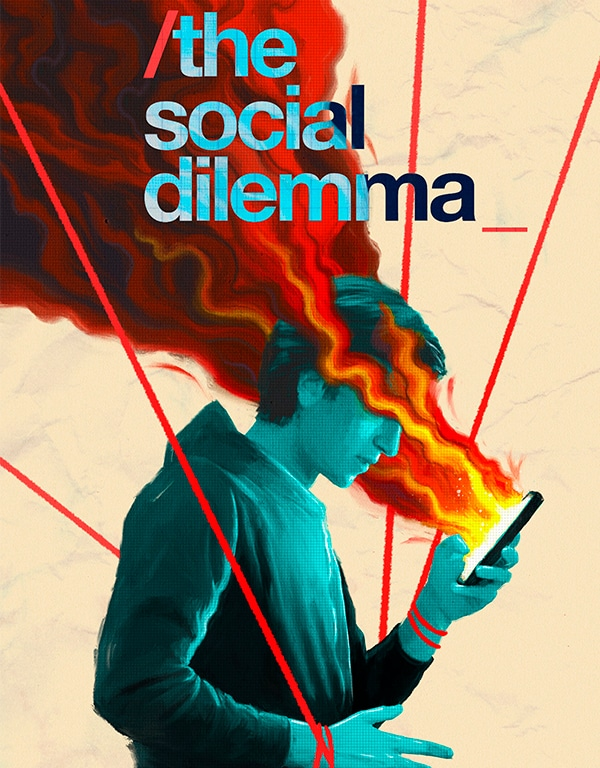

O Dilema das Redes
Documentário que expõe os perigos das redes sociais através de depoimentos de ex-executivos de grandes empresas de tecnologia. Mostra como algoritmos afetam comportamentos e saúde mental.
Algoritmos
Vício Digital
Manipulação